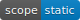

This is the jsdoc template handler. It deals with and acts as the namespace for all templates executed
by shinstrap in pursuit of rendering documentation for the doclets generated by jsdoc.
members
<static> layout
The layout to use for all templates rendered via shinstrap.
<static> supplementalCSS
The supplemental css resource file. Yes, we only allow one. Discovered via jsdoc's standard resource discovery
mechanism.
methods
 find()
- See:
-
- jsdoc/util/templateHelper.find
htmlsafe()
- See:
-
- `sanitize-html`
linkto()
- See:
-
- jsdoc/util/templateHelper.linkto
marshalItemDisplay()
moment()
- See:
-
- `moment`
partial(_file, _data)
This is an instance "patch" override of jsdoc's core Template class's partial() function. This patch
implements the templateOverrideDir functionality. partial() in turn handles the caching and invocation of
a template in jsdoc. {@see jsdoc/template.Template#partial}
Parameters:
| Name | Type | Description |
|---|---|---|
_file |
string | Name of the template file to render. |
_data |
object | If the template is not scaffolded this is the doclet or doclet-shard (typically called
|
- ToDo:
-
-
Originally I thought this made more sense and was less invasive as an instance override, but now I'm coming around to the idea that it should probably be a direct patch on
Template, given I really am the only client of that class in the framework.
-
renderDoclet()
resolveArrangement()
resolveAuthorLinks()
- See:
-
- jsdoc/util/templateHelper.resolveAuthorLinks
scaffoldPartial()
scaffoldPartialBySpec()
tutoriallink()
- See:
-
- jsdoc/util/templateHelper.tutoriallink